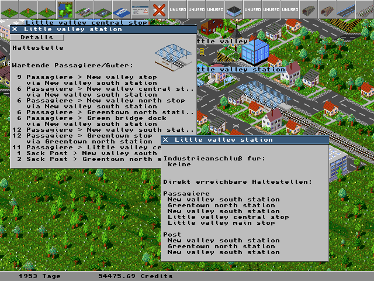

Das Haltestelleninformationsfenster besteht eigentlich aus zwei Fenstern:
1.) Das Übersichtfenster, das sich öffnet, wenn man die Haltestelle mit dem Abfragewerkzeug anklickt.
2.) Das Detailfenster das sich öffnet wenn man de "Detail" Button im Übersichtsfenster anklickt.

Das Übersichtsfenster zeigt an, welche Waren an der Haltestelle lagern. Dei Waren werden dabei nach Sorte und Ziel aufgeschlüsselt. Bei Waren, die über einen Zwischenhalt an ihr Ziel gelangen ist auch der Zwischenhalt aufgeführt.
Das Deteilfenster enthält Informationen über die Fabriken, die an die Haltestelle angeschlossen sind. Im diesem Beispiel sind keine Fabriken an die Haltestelle angeschlossen. Ausserdem werden die direkt erreichbaren Haltestellen für die diversen Güter aufgeführt, die sind das für Passagiere fünf Haltestellen und für Post drei.